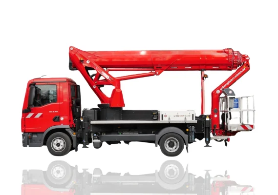
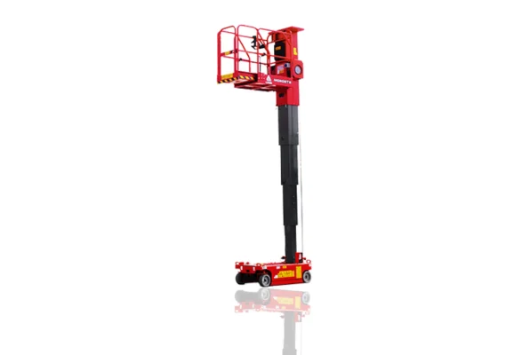
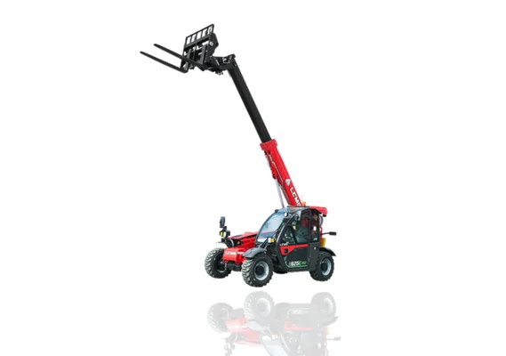
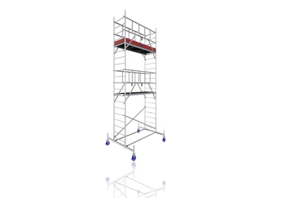

Mietgeräte
84 Geräte in 7 Kategorien – Beispielprogramm der Demo. Jede Kategorie lässt sich nach Arbeitshöhe und Antrieb filtern.

Lkw-Arbeitsbühnen
Große Höhen und Reichweiten, sofort einsatzbereit – kein Tieflader nötig.
bis 29 m · 6 Geräte
Scherenbühnen
Große Arbeitsplattform, hohe Tragkraft – für Innen- und Außeneinsatz.
bis 34 m · 40 Geräte
(Gelenk-)Teleskopbühnen
Über Hindernisse hinweg arbeiten – mit Gelenk oder gerade.
bis 34 m · 20 Geräte
Mastbühnen & Personenlifte
Kompakt, leise, durch jede Tür – für Wartung und Innenausbau.
bis 13 m · 4 Geräte
Raupenbühnen
Geringes Gewicht, schmale Durchfahrt, große Höhe – auch auf Rasen und Pflaster.
bis 31 m · 3 Geräte
Teleskopstapler & Hubwagen
Lasten heben und umsetzen – mit Gabel, Korb oder Haken.
bis 25 m · 9 Geräte
Lastenlift & Aluminiumgerüste
Material nach oben, sicherer Stand – schnell auf- und abgebaut.
bis 9 m · 2 Geräte